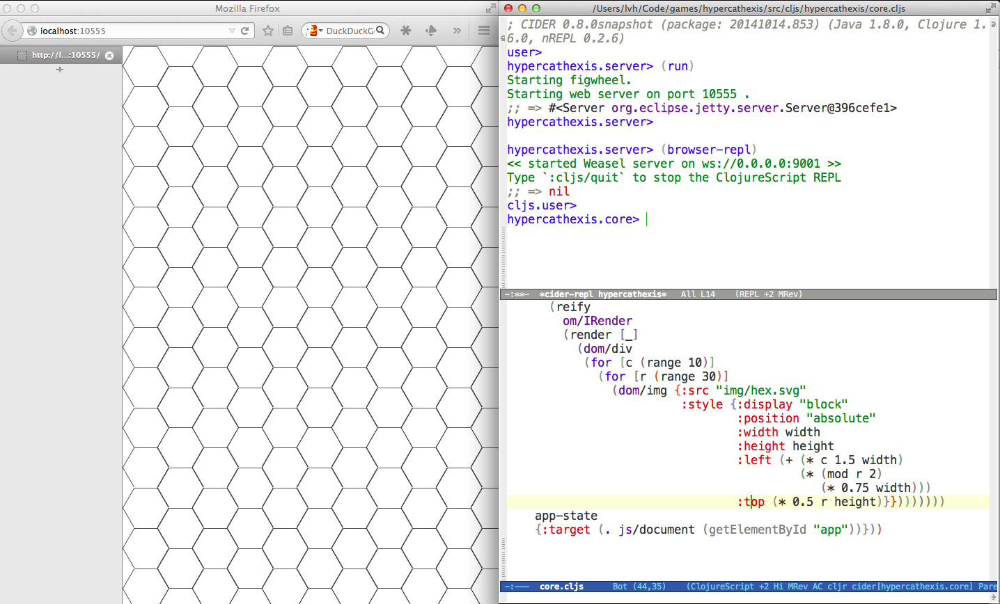
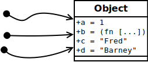
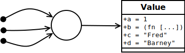
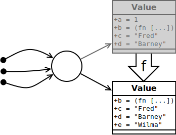

Clojure
lvh
_@lvh.io
Link to slides
http://www.lvh.io/ClojureIntro/
https://www.github.com/lvh/ClojureIntro
Introduction
Who am I?

KUL

Rackspace

Python

More importantly: Clojure!

BeClojure
Who are you?
- In this class? At KUL?
- Functional programming?
- HOF?
map,filter,reduce?
- HOF?
- Lisps? Clojure?
About this talk
A lot of content
- Play it by ear
- Questions after every section
- 15m break in the middle
About this talk
- High-and-wide overview
- Lots of opinions, too
Hello, Clojure!
What’s Clojure?
(apply modern-lisp @jvm)
Homoiconic syntax
(f a b c)
just a different spelling for:
f(a, b, c)
A lisp? Really?

What’s so nice about it?
Lots of reasons:
- Immutability & functional programming
- JVM, also JS & CLR
- General purpose
- Live and REPL-based programming
- “Just do it already” (my favorite)
- …
Live and REPL-based programming
How long does it take to try something?
- C++: ages
- Python, Go: pretty fast
- Clojure:
C-c C-e
Live and REPL-based programming
Meta-eX
Just do it already
(Partial) static typing
- Python: talking about it forever
- Annotation syntax is enough, right?
- Finally going to make it in 3.whatever
- Clojure:
core.typed
Just do it already
Software transactional memory
- Python: 8 working prototypes
- ~2x slowdown from regular Python
- Some of the smartest people on it
- Difficult because Python is hard to optimize
- Clojure: STM since 1.0
Just do it already
Asynchronous programming
- Python: asyncio
- (caveat: I am the original author of async-pep)
- Yay! Yet another event loop framework!
- Clojure: core.async
- Supports both threads & IOC
- Goroutines? Library, not language feature
Just do it already
Logic programming
- Python: bunch of weekend hacks
- Clojure: popular library
Not about Python
Most other languages are the same or worse
Ball of mud
Lisp is a ball of mud
$LANG is a shiny diamond
Big ideas
Immutability by default
- Default types are immutable
- You can alway import
ArrayList - … unfortunately also
Date:-(
Functional programming
“85% functional”
Java interoperability
Decomplection
Complex
- Does many things
- Related to, but ≠ hard!
Simple
- Does one thing
- Related to, but ≠ easy!
The value of values
Values are immutable!
“Single” values
- Java:
BigInt,BigDecimal… - Python:
int,float… - Counterexample:
java.util.Date
We’ve made a terrible mistake!
12 Jan 1991, 18 Mar 2002
How many dates?
- Two!
- In Java?
- Take a
Date, change day, month, year - Same
Date, different date! - Why do we accept this?
- Take a
Maybe I’m overreacting
- Most people agree
Datewas a mistake- Bloch has apologized for it profusely
- Most people agree immutable types are good
- Numerics, strings…
- … but mutability is still the default!
someObject.setWhatever
“Compound” values
E.g. collections
- Java: ArrayList, Hash(Set|Map)
- Python: list, set, dict…
- Counterexample: tuple
We have made a terrible mistake!
{3, 5}, {3, 5, 7}
How many sets?
- Two!
- In Java? (and Python, and…)
- Take a
HashSet, add/remove some elements - Same
Set, different set! - Why do we accept this?
- Take a
Why are we here?
Imperative, single-threaded programming!
- You can work around mutability
- … iff you’re the only actor!
What’s wrong?
No concept of time or transitions
- Stop the world, do some stuff, continue
- Everything happens “right now”
- That’s great, but I have n cores…
Idea of values isn’t new
“No man can cross the same river twice.”
– Heraclitus, ~500 BC
Value, identity, state

Identity is just a name
The river doesn’t stop existing just because nobody is around to call it a river…
States are facts
- Fact ~ Lat. factum: “done”
- Perfect tense! Does not change!
- Example
- Bill Clinton was president of the US.
- We can have new presidents
- Doesn’t change that fact!
We need facts for knowledge
- We combine, compare facts to make decisions
- especially from different time points
- Imagine if you only knew current state!
- Ever seen “Memento”?
Our own systems do this
E.g. logs, source control
What if they destroyed data?
They would be totally useless
Recap
- Things don’t change in place
- The future is a function of the past
- The future does not change the past
- Concurrency makes everything worse
Persistent data structures
What are they?
- Class of immutable data structures
(f x)gives you new data structure- Not about persisting to a database
Performance?
- Typically not an issue
- Modern implementations are very efficient
- JVM is an impressive piece of engineering
- There are always options:
transient,persistent!- import classic data structures
Performance is often better
- E.g. pointer equality checks
- Example: Om beating React.js
- Get data sharing for free
- No defensive copying, cloning, locks…
- Conclusion
- Maybe some operations may be slower…
- Entire program can still be faster!
New possibilities
Keeping old versions around is cheap!
- Easy “undo”, “time travel”
- Speculative evaluation
How does it actually work?
Bit-partitioned hash tries
Bit partitioning

Hash trie


Path copying

How deep does it go?
| Depth | Nodes |
| 0 | 32 |
| 1 | 1024 |
| 2 | ~32k |
| 3 | ~1M |
| 4 | ~32M |
Garbage-efficient

Reference types & concurrency
Conventional OOP vs Clojure
| Conventional | Clojure | |
|---|---|---|
| References | Direct | Indirect |
| Objects | Mutable | Immutable |
| Concurrency? | Lock-and-pray | Ref type semantics |
Conventional OOP model
Encapsulation doesn’t fix this!
Clojure model
Indirect reference to immutable value
Updating
Doesn’t affect readers; not affected by readers
Clojure reference types
| ref | agent | atom | volatile | (vars) | |
|---|---|---|---|---|---|
| Shared? | ✓ | ✓ | ✓ | ✗ | ✗ |
| Synchronous? | ✓ | ✗ | ✓ | ✓ | ✓ |
| Coordinated? | ✓ | ✗ | ✗ | ✗ | ✗ |
Consistent interface
(transition-fn ref func [& args])new-state: (func current-state &args)- Get current value:
@ref - No user locking; no deadlocks
Ref types provide time semantics
Consistency models
Deep similarity!
- Describe how concurrent ops can interact
- E.g. linearizability, serailizability, RYW, MR, MW…
- Gives you “time” (not wallclock time)
Example: atoms
(atom init-val)(swap! some-atom f & args)to modifycompare-and-set!too (bit more low level)
reset!to rudely modify
Example: atoms
(def n (atom 1)) (swap! n inc) ;; => 2 (swap! n * 10) ;; => 20
Transitions could be swap!
STM
What is STM?
- Software transactional memory
- Concurrency model
- Transactions (ACI, not D)
- Backed by MVCC
What makes STM special?
- In Clojure (vs. other ref types):
- Coordination between refs
- In general (vs. other concurrency models):
- Alternative to manual locking
Clojure API
refreference typedosyncto make transactionsalterandcommuteto modify- (
ref-setto rudely modify)
- (
ensureto check the current value
Get the current value:
(def n (ref "xyzzy")) @n ;; => "xyzzy" (dosync (prn @n)) ;; xyzzy
Modify inside transactions
(def n (ref 0)) (alter n inc) ;; IllegalStateException ;; No transaction running ... @n ;; => 0 (dosync (alter n inc)) @n ;; => 1
STM example
(defn transfer [amount from to] (dosync (alter from - amount) (alter to + amount)))
alter vs commute
- Virtually the same thing
commuteallows more orderings- More orderings: better concurrency
- Are those orderings OK?
- commutative
func - last-write-wins
- commutative
Example: alter vs commute
(def counter (ref 0)) (defn slow-inc! [alter-fn counter] (dosync (Thread/sleep 100) (alter-fn counter inc))) (defn bombard-counter! [n f counter] (apply pcalls (repeat n #(f counter))))
alter performance
(dosync (ref-set counter 0)) (time (doall (bombard-counter! 20 (partial slow-inc! alter) counter))) ;; => (1 2 4 3 5 6 13 12 9 8 7 11 10 15 17 14 20 18 19 16) ;; "Elapsed time: 2025.646 msecs" ;; 20 incs * 100 ms = 2000 ms...
commute performance
(dosync (ref-set counter 0)) (time (doall (bombard-counter! 20 (partial slow-inc! commute) counter))) ;; => (3 6 1 1 7 1 1 8 8 8 8 8 10 14 15 15 19 15 15 19) ;; "Elapsed time: 305.23 msecs" ;; Without delay: virtually instant, so 3 txn attempts
Implementation
Pretty intricate
- MVCC + adaptive history queues
- This gives you snapshot isolation
- One global counter: the ref timestamp
Create a transaction
- Gets a unique identifier
- Gets the current timestamp: “read point”
Do stuff inside transaction
- Per-transaction “cache”
- Keep track of writes, ensures, commutes
(Try to) commit the transaction
- Compare our timestamps with global timestamps
- Conflict? Retry!
Retry? That sounds inefficient
Implementation has a number of clever tricks…
Locks + wait/notify
- Internal dependency tracking
- (vs. optimistic lock-free spinning)
- Avoids churn (constant retrying without progress)
Barging
- Writes are publicly marked as being-written-to
- Eager detection of write conflicts, before commit
- Oldest transaction continues, new one restarts
- This clearly violates isolation
- Remember: isolation is just a model
- No promises about how it actually works
It all comes together
- Relies on speculative execution
- Needs persistent data structures!
@Raw
Need a synchronization primitive?
Why not locks?
Locks are incredibly hard to use
- Very tricky to reason about
- Deadlock free?
- Livelock free?
- Are you sure?
- Some patterns are easy, but inefficient
- Example: GIL, BKL
- Requires extensive error handling
- Yay, orphaned locks!
- Worst part: often looks like it’s working
- … even when the program is incorrect
Failure modes
Segmentation fault- (Silent?) data corruption
Comparison
Manual memory management
versus
GC and lifetime analysis
Concurrency in practice
New users
- Used to imperative patterns
- They want variables
- How else would you write software?
- Result: atoms, atoms everywhere
- Eventually: sadness
Usage pattern: 1 big atom
One atom, usually with a map, to hold state:
(def app-state (atom {:user-name "lvh" :todo-items ["Take out trash" "Present Clojure intro"] :done-items #{"Make slides"}}))
Why not STM?
I don’t know for sure, but I have some hypotheses:
- Real app state usually less than you might think
- High concurrency is not always necessary
- Single atom still allows sane state changes
- Easy to dump current state: reproducibility!
Real answer is probably all of the above & more :-)
Transducers
Fairly new feature
(1.7, beta)
Only bad part is the name
- What’s a transducer?
- It’s a reducing function transformer!
- What’s a reducing function?
- It’s a function you’d pass to reduce!
- Gee, thanks!
Monads
Just monoids in the category of endofunctors!
map
(map f coll)
((f x) for all x in coll)
(map inc [1 2 3]) ;; => (2 3 4)
filter
(filter f coll)
(all of the x in coll, if (f x))
(filter even? [1 2 3]) ;; => (2)
reduce
(reduce f coll)
(accumulate over coll with f)
(reduce + [1 2 3 4]) ;; => 10
Problem!
We kept implementing map, reduce, etc.
- Collections (the ones we just saw)
- Streams
- Observables
- Channels (core.async)
Big idea
Extract the essence of map, reduce…
- Not just for colls, channels…
- Implement as process transformations
Processes
- Succession of steps
- Each step takes an input
- Example: building a collection
- Generally: seeded left reduce
Transducer vs regular map
(map f)
vs.
(map f coll)
Transducer vs partial map
(map f)
vs.
(partial map f)
So what can I do with transducers?
(Examples adapted from Rich Hickey’s Strange Loop talk)
;; Build concrete collections (into airplane process-bags pallets) ;; Build a lazy sequence (sequence process-bags pallets) ;; "Reduce" a collection (transduce (comp process-bags (map weigh)) + pallets) ;; core.async channels (chan 1 process-bags)
Example use case
Probe + heater + egg + Arduino
Results: delicious!
(def xform (comp (partial map inc) (partial filter odd?) (partial map #(* 3 %))))
(xform [1 2 3])
Big example
Stoleadapted from Rich Hickey at Strange Loop- Airport: airplanes get loaded with luggage
- What happens to luggage is a process
As a transducer
(comp (mapcat unbundle-pallet) (take-while (complement ticking?)) (filter (complement smells-like-food?)) (map label-heavy-items) (take max-plane-capacity))
Why is this awesome?
- Fast!
- Efficient (no intermediate collections)
- Concrete re-use!
- Across sources
- Direct re-use of transducers
Macrology
Code ≡ data
Many basic “language features” are macros:
defn, and, cond…
(Just like Racket)
Domain specific languages
- Default Lisper behavior
Polymorphism
Protocols
Multimethods
x.m(a, b, c)
Which m?
m depends on type of x
- Single dispatch
- Java, C++, C#…
Python: bit more complicated
Not just type of x, but the value of x.m
- Override
x.mon the instance __getattr(ibute)__hacks
x still picks the m!
“Sending a message”
(Smalltalk parlance)
x ← m(a, b, c)
No interesting differences
- Logic is fixed
- Always up to
x
We can do better!
Multimethods
Routing logic: f(x)
Example
Icecap example?
core.logic
The Reasoned Schemer

Conclusion
A modern, pragmatic Lisp
Don’t learn Clojure!
Going back is painful ;-)
Thank you!
Questions?
Suggested rants
Bad type systems
- Scala:
def map[B, That](f: A => B)(implicit bf: CanBuildFrom[Repr, B, That]): That - Go:
interface{}